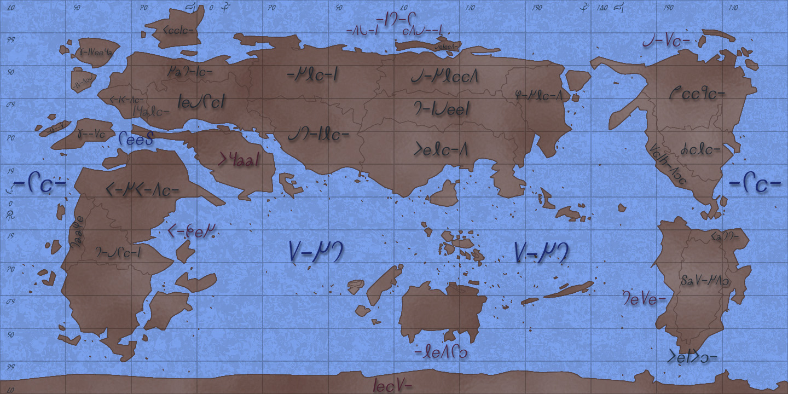

|
神代地図
下記は神代のアトラス図についてである。
神代とはfial, artem, vaste, cavasという4時代の総称であり、約147億年続く。
そのほとんどがfialで、次の時代であるartemは終末から数えてわずか105万年前のことである。
最初の男女の神であるエルト神とサール神が生まれたのが6500万年前のことである。
彼らはざっくばらんにいえば6400万年間のあいだデートしかしていないため、歴史的に特筆することはない。
従って有史というと彼らが死んでアルミヴァの12神ができたartemからの105万年間を指す。
artemは100万年続き、次のvasteとcavasは4万年続く。残る1万年が人間の時代である。
従って計104万年が神代となる。
アルミヴァの12神は最初（メルティア0年）フィーリア島に住んでいた。
メルティア35年に人類であるユーマの一族が神に追放され、ガルヴェーユ島へ。
それから時間が流れ、メルティア85万年に神々がガルヴェーユへ移住。ユーマの一族を追い出す。
また、ユーマの一族も住んでいなかった無人の土地（アルヴァノスとルカリア）も領地とする。
この引越しの時点で神々はアトラスを回ってよい土地を探し、大陸と大洋に名を付けた。
一方、ガルヴェーユから追放されたユーマの一族のうちシフェルの民はファベルと南アンシャルに、マレットの民はサヴィアとファベル南西部へ渡った。
ファベルではファルファニア、南アンシャルではリュディアが成立。サヴィアではシージア、ファベル南西部ではクーヘとカスティアルが成立。
リュディアの中心地は現在のファルファニアであり、ほとんどのリュディア人は現アルバザードまで進まなかった。
メルティア95万年ごろ、ファルファニア人の一部が食料と土地を求めてファベルからアンシャルへ入る。
一方マレット人の一部はサヴィアからインサールとケヴェアに入る。
シフェル人の間で内戦が起き、ファルファニア人とリュディア人が争い、前者が勝利する。これを記念してファルファニア人はリュディア中心部周辺をファルファニア(falfania)と改名。
リュディア人はリュディア国辺境、すなわち現アルバザードへ追いやられる。
リュディアの一部は奪われてファルファニアと改名されたため、リュディア人は残った国土をレスティルと改名した。
彼らは神がいるのでフィーリア、ガルヴェーユ、ルカリアには原則として住めなかった。この後９万年ほどかけてリュディア人の一部がはさらにスカルディア、メディアンなどに広がっていく。少数ながら神の土地に入り込んで住んでいた部族もいるこのころ、古代の地名が人類によって命名された。多くの地名は人類が付けたものである。
神が命名したのは大陸と大洋のほかには、フィーリア、アルヴァノス、ルカリアのみ。
ガルヴェーユは人類。その他の国名も人類によるもの。
この後、メルティア100万年でヴァステが開戦する。
この時点での神代の地図が下記のとおりである。
概略図であり、大雑把に国の位置を知るためのものである。

●ラヴァス
ラヴァスでは国の名前は変わらないものの、この地図と比べて変更点がある。
1:ヴァステでミュール大陸が崩壊して群島となった。
2:ヴァステでアルカット大陸南岸が大幅に削り取られた。
●神代の地図はどこを以って定めるべきか
大陸の形はヴァステ終了時点でほぼ現在のものと一致する。
違いはルティアのセレンス海溝の有無くらいである。
ラヴァス開戦の時点での地図を神代の代表とすると、現代図との差が分かりにくい。
逆にアルテム開始の時点では国名が定まっておらず、地図の意味がない。
従って最も神代の地図を神代らしく反映しているものはvaste開戦時のものになる。
|